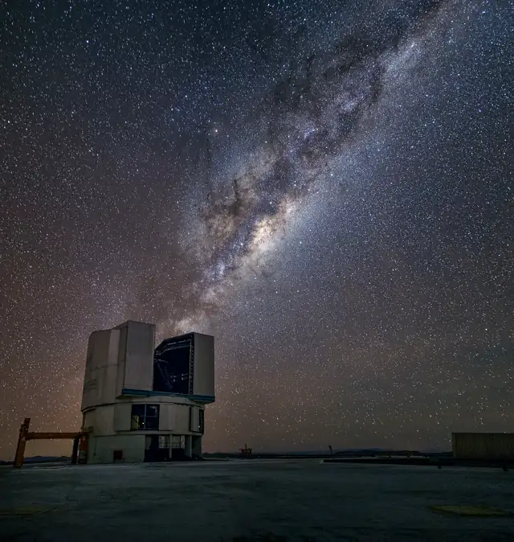

Créditos de las fotografías
Todas las fotografías vienen de Wikimedia Commons y tienen licencias libres. Las de ESO y NASA son imágenes reales tomadas por observatorios y agencias espaciales. Más abajo están las fotos de las guías Grandes ideas de la astronomía y las referencias, incluido el documento «Grandes Ideas de la Astronomía» (PDF).
-

Portada
Up close with the Milky Way (vlt-6008-cc), de ESO/M. Claro. Licencia CC BY 4.0.
-

¿Qué es la astronomía?
Yepun and the Milky Way, de ESO/J. Colosimo. Licencia CC BY 4.0.
-

Los orígenes de la observación del cielo
Nebra Scheibe, de Dbachmann. Licencia CC BY-SA 3.0.
-

Sondas Voyager
Voyager testing at JPL, de John Gregoire, NASA/JPL. Licencia Dominio público.
-

Contaminación lumínica
Like a sunset, but with stars. Light pollution is a world problem. -ForcedPerspective -WorldProblems (28152755537), de Petr Hykš. Licencia CC0.
-

Exoplanetas
Kepler space telescope seen fom downside, de NASA/Troy Cryder. Licencia Dominio público.
-

Constelaciones
Orion Head to Toe, de Rogelio Bernal Andreo. Licencia CC BY-SA 3.0.
-

Movimiento general diario
Whirling Southern Star Trails over ALMA, de ESO/B. Tafreshi (twanight.org). Licencia CC BY 4.0.
-

Astrofotografía con celular
Banishing Light Pollution (potw1936a), de ESO/P. Horálek. Licencia CC BY 4.0.
-

Misión Helios
Sun on October 23rd, 2014 (15589431866), de Stephen Rahn. Licencia CC0. Recortada.
-

Fases de la Luna
FullMoon2010, de Gregory H. Revera. Licencia CC BY-SA 3.0.
-

Uruguayos en el espacio
Bennu mosaic OSIRIS-REx, de NASA/Goddard/University of Arizona. Licencia Dominio público. Recortada.
-

Movimiento general diario: luces de una ruta
Los Angeles County Sheriff's Helicopter - 01, de Tequask. Licencia CC BY-SA 4.0.
Grandes ideas de la astronomía
Fotos de las guías basadas en las grandes ideas de la astronomía. Todas vienen de Wikimedia Commons, con licencias libres (Creative Commons o dominio público) que permiten usarlas con fines educativos citando a sus autores. Se muestran directamente desde Wikimedia Commons.
Los orígenes de la observación del cielo Grandes ideas 1.1 a 1.6

Stonehenge2007 07 30
Ver en Wikimedia Commons (se abre en una pestaña nueva), de garethwiscombe. Licencia CC BY 2.0 (se abre en una pestaña nueva).

Sidney Hall - Urania's Mirror - Scorpio
Ver en Wikimedia Commons (se abre en una pestaña nueva), de Sidney Hall (1824) / Adam Cuerden. Licencia Dominio público (se abre en una pestaña nueva).

Van Gogh - Starry Night - Google Art Project
Ver en Wikimedia Commons (se abre en una pestaña nueva), de Vincent van Gogh (1889). Licencia Dominio público (se abre en una pestaña nueva).

Zodiaque de Dendéra - Musée du Louvre Antiquités Egyptiennes D 38 ; E 13482
Ver en Wikimedia Commons (se abre en una pestaña nueva), de Shonagon. Licencia CC0 (se abre en una pestaña nueva).
.jpg?width=250)
US Navy 050721-N-5549O-038 Quartermaster 2nd Class Stephanie Hudson from Plymouth, Mass., peers through a marine sextant, a navigational instrument used to determine celestial navigation aboard USS Ronald Reagan (CVN 76)
Ver en Wikimedia Commons (se abre en una pestaña nueva), de U.S. Navy. Licencia Dominio público (se abre en una pestaña nueva).
De la Tierra al Sol: cambiar el centro del Universo Grandes ideas 1.7 a 1.10

Cellarius ptolemaic system
Ver en Wikimedia Commons (se abre en una pestaña nueva), de Andreas Cellarius (1660) / Jan van Loon. Licencia Dominio público (se abre en una pestaña nueva).

Nikolaus Kopernikus
Ver en Wikimedia Commons (se abre en una pestaña nueva), de Autor desconocido (c. 1580). Licencia Dominio público (se abre en una pestaña nueva).

Cellarius Harmonia Macrocosmica - Planisphaerium Copernicanum
Ver en Wikimedia Commons (se abre en una pestaña nueva), de Andreas Cellarius (1660). Licencia Dominio público (se abre en una pestaña nueva).

Galilei telescopes, Museo Galileo, Florence, Inv. 242, 2428, 224088
Ver en Wikimedia Commons (se abre en una pestaña nueva), de Zde. Licencia CC BY-SA 4.0 (se abre en una pestaña nueva).

Galileo moon phases
Ver en Wikimedia Commons (se abre en una pestaña nueva), de Galileo Galilei (1609). Licencia Dominio público (se abre en una pestaña nueva).

The Earth seen from Apollo 17
Ver en Wikimedia Commons (se abre en una pestaña nueva), de NASA / tripulación del Apolo 17. Licencia Dominio público (se abre en una pestaña nueva).
El cielo de todos los días Grandes ideas 2.1 a 2.5

ISS-59 Terminator above the Gulf of Guinea
Ver en Wikimedia Commons (se abre en una pestaña nueva), de NASA. Licencia Dominio público (se abre en una pestaña nueva).

Sur3 Moon phases es
Ver en Wikimedia Commons (se abre en una pestaña nueva), de Ana Cichero, maestra uruguaya. Licencia CC BY-SA 3.0 (se abre en una pestaña nueva).

Eclipse and Super blue blood moon 31.01.2018 DSCN9664
Ver en Wikimedia Commons (se abre en una pestaña nueva), de Irvin calicut. Licencia CC BY-SA 4.0 (se abre en una pestaña nueva).

Bay of Fundy High Tide
Ver en Wikimedia Commons (se abre en una pestaña nueva), de Samuel Wantman. Licencia CC BY-SA 3.0 (se abre en una pestaña nueva).

Bay of Fundy Low Tide
Ver en Wikimedia Commons (se abre en una pestaña nueva), de Samuel Wantman. Licencia CC BY-SA 3.0 (se abre en una pestaña nueva).

Solar eclipse 1999 4
Ver en Wikimedia Commons (se abre en una pestaña nueva), de Luc Viatour. Licencia CC BY-SA 3.0 (se abre en una pestaña nueva).
El Sol, las auroras y la tecnología del espacio Grandes ideas 2.6 a 2.8

Sunflower field in late afternoon sun with cloudy sky in Munich, Germany
Ver en Wikimedia Commons (se abre en una pestaña nueva), de Pittigrilli. Licencia CC0 (se abre en una pestaña nueva).

Aurora borealis over Eielson Air Force Base, Alaska
Ver en Wikimedia Commons (se abre en una pestaña nueva), de Joshua Strang, Fuerza Aérea de EE. UU.. Licencia Dominio público (se abre en una pestaña nueva).

Ccd-sensor
Ver en Wikimedia Commons (se abre en una pestaña nueva), de C-M. Licencia CC BY-SA 3.0 (se abre en una pestaña nueva).

MRI-Philips
Ver en Wikimedia Commons (se abre en una pestaña nueva), de Jan Ainali. Licencia CC BY 3.0 (se abre en una pestaña nueva).

Aurora Australis Over the Tasman Sea from SouthWest National Park
Ver en Wikimedia Commons (se abre en una pestaña nueva), de Jamen Percy. Licencia CC BY-SA 4.0 (se abre en una pestaña nueva).
Un cielo nocturno lleno de sorpresas Grandes ideas 3.1 a 3.7

ESO - Milky Way
Ver en Wikimedia Commons (se abre en una pestaña nueva), de ESO / S. Brunier. Licencia CC BY 4.0 (se abre en una pestaña nueva).
.jpg?width=250)
Crux Watches Over ALMA (potw1924a)
Ver en Wikimedia Commons (se abre en una pestaña nueva), de P. Horálek / ESO. Licencia CC BY 4.0 (se abre en una pestaña nueva).

Moon, clouds and blue sky in Australia
Ver en Wikimedia Commons (se abre en una pestaña nueva), de Kgbo. Licencia CC BY-SA 4.0 (se abre en una pestaña nueva).
.jpg?width=250)
Dawning of Venus at Cerro-Tololo (iotw2520a)
Ver en Wikimedia Commons (se abre en una pestaña nueva), de CTIO / NOIRLab / NSF / AURA / P. Horálek. Licencia CC BY 4.0 (se abre en una pestaña nueva).
.jpg?width=250)
Milky Way and star trails over ALMA (startrail-2-cc)
Ver en Wikimedia Commons (se abre en una pestaña nueva), de S. Otarola / ESO. Licencia CC BY 4.0 (se abre en una pestaña nueva).

In the photo there is one Perseid, Milky Way and Andromega galaxy and light pollution on the horizon - Luhasoo bog in Estonia
Ver en Wikimedia Commons (se abre en una pestaña nueva), de Martin Mark. Licencia CC BY-SA 4.0 (se abre en una pestaña nueva).

Willamette Meteorite AMNH
Ver en Wikimedia Commons (se abre en una pestaña nueva), de Dante Alighieri (usuario de Commons). Licencia CC BY-SA 3.0 (se abre en una pestaña nueva).
Mensajeros del Universo: luz, gravedad y más Grandes ideas 4.1 a 4.4

EM Spectrum Properties es
Ver en Wikimedia Commons (se abre en una pestaña nueva), de Crates, a partir de Inductiveload. Licencia Dominio público (se abre en una pestaña nueva).

Northern leg of LIGO interferometer on Hanford Reservation
Ver en Wikimedia Commons (se abre en una pestaña nueva), de Umptanum. Licencia CC BY-SA 3.0 (se abre en una pestaña nueva).
.jpg?width=250)
Kraken Supercomputer (3592578852)
Ver en Wikimedia Commons (se abre en una pestaña nueva), de Oak Ridge National Laboratory. Licencia CC BY 2.0 (se abre en una pestaña nueva).

Crab Nebula
Ver en Wikimedia Commons (se abre en una pestaña nueva), de NASA, ESA, J. Hester y A. Loll. Licencia Dominio público (se abre en una pestaña nueva).
Una ciencia de equipo, distancias gigantes y arcoíris de luz Grandes ideas 4.5 a 4.8

Earth and Moon to scale
Ver en Wikimedia Commons (se abre en una pestaña nueva), de António Miguel de Campos. Licencia Dominio público (se abre en una pestaña nueva).

Fraunhofer lines
Ver en Wikimedia Commons (se abre en una pestaña nueva), de MaureenV y Phrood (Commons). Licencia Dominio público (se abre en una pestaña nueva).
ESO - Milky Way
Ver en Wikimedia Commons (se abre en una pestaña nueva), de ESO / S. Brunier. Licencia CC BY 4.0 (se abre en una pestaña nueva).
Telescopios: ojos gigantes para mirar el cielo Grandes ideas 5.1 a 5.4

Laser Towards Milky Ways Centre
Ver en Wikimedia Commons (se abre en una pestaña nueva), de ESO / Yuri Beletsky. Licencia CC BY 4.0 (se abre en una pestaña nueva).

USA.NM.VeryLargeArray.02
Ver en Wikimedia Commons (se abre en una pestaña nueva), de Hajor. Licencia CC BY-SA 3.0 (se abre en una pestaña nueva).

HST-SM4
Ver en Wikimedia Commons (se abre en una pestaña nueva), de NASA / tripulación del STS-125. Licencia Dominio público (se abre en una pestaña nueva).

JWST spacecraft model 3
Ver en Wikimedia Commons (se abre en una pestaña nueva), de NASA. Licencia Dominio público (se abre en una pestaña nueva).

Mauna Kea Eastern Telescopes
Ver en Wikimedia Commons (se abre en una pestaña nueva), de Generic1139. Licencia CC BY 4.0 (se abre en una pestaña nueva).

ALMA antennas on Chajnantor
Ver en Wikimedia Commons (se abre en una pestaña nueva), de ESO / B. Tafreshi (twanight.org). Licencia CC BY 4.0 (se abre en una pestaña nueva).
Gran ciencia: datos, supercomputadoras y sondas espaciales Grandes ideas 5.5 a 5.8

Trifid and Lagoon nebulae
Ver en Wikimedia Commons (se abre en una pestaña nueva), de Observatorio Vera C. Rubin (NSF–DOE). Licencia CC BY 4.0 (se abre en una pestaña nueva).
.jpg?width=250)
DECaLS Galaxies Now in Galaxy Zoo (noaoann15012a)
Ver en Wikimedia Commons (se abre en una pestaña nueva), de DECaLS, T. Abbott y NOAO / AURA / NSF. Licencia CC BY 4.0 (se abre en una pestaña nueva).
Kraken Supercomputer (3592578852)
Ver en Wikimedia Commons (se abre en una pestaña nueva), de Oak Ridge National Laboratory. Licencia CC BY 2.0 (se abre en una pestaña nueva).

SKA-MPI
Ver en Wikimedia Commons (se abre en una pestaña nueva), de Organización del Square Kilometre Array (SKAO). Licencia CC BY 3.0 (se abre en una pestaña nueva).

Cassini Saturn Orbit Insertion
Ver en Wikimedia Commons (se abre en una pestaña nueva), de NASA / JPL. Licencia Dominio público (se abre en una pestaña nueva).

International Space Station after undocking of STS-132
Ver en Wikimedia Commons (se abre en una pestaña nueva), de NASA / tripulación del STS-132. Licencia Dominio público (se abre en una pestaña nueva).
.jpg?width=250)
Vera C Rubin Observatory in the Snow (IMG 0315-CC)
Ver en Wikimedia Commons (se abre en una pestaña nueva), de NOIRLab / NSF / AURA / C. Corco. Licencia CC BY 4.0 (se abre en una pestaña nueva).
La edad del Universo y el viaje de la luz Grandes ideas 6.1 a 6.4
.jpg?width=250)
Andromeda Galaxy (with h-alpha)
Ver en Wikimedia Commons (se abre en una pestaña nueva), de Adam Evans. Licencia CC BY 2.0 (se abre en una pestaña nueva).

Observable universe logarithmic illustration
Ver en Wikimedia Commons (se abre en una pestaña nueva), de Pablo Carlos Budassi. Licencia CC BY-SA 3.0 (se abre en una pestaña nueva).

Hubble ultra deep field
Ver en Wikimedia Commons (se abre en una pestaña nueva), de NASA y ESA. Licencia Dominio público (se abre en una pestaña nueva).
Lo que no vemos: materia oscura, expansión y Big Bang Grandes ideas 6.5 a 6.11

1e0657 scale
Ver en Wikimedia Commons (se abre en una pestaña nueva), de NASA / CXC / M. Weiss. Licencia Dominio público (se abre en una pestaña nueva).

Cosmic web
Ver en Wikimedia Commons (se abre en una pestaña nueva), de Volker Springel / Instituto Max Planck de Astrofísica. Licencia CC BY-SA 4.0 (se abre en una pestaña nueva).
.jpeg?width=250)
Cosmic Microwave Background (CMB)
Ver en Wikimedia Commons (se abre en una pestaña nueva), de ESA y la Colaboración Planck. Licencia CC BY 4.0 (se abre en una pestaña nueva).
Nuestro vecindario: el Sistema Solar Grandes ideas 7.1 a 7.5

HL Tau protoplanetary disk
Ver en Wikimedia Commons (se abre en una pestaña nueva), de ALMA (ESO / NAOJ / NRAO). Licencia CC BY 4.0 (se abre en una pestaña nueva).

Planets and sun size comparison
Ver en Wikimedia Commons (se abre en una pestaña nueva), de Lsmpascal. Licencia CC BY-SA 3.0 (se abre en una pestaña nueva).

Pluto in True Color - High-Res
Ver en Wikimedia Commons (se abre en una pestaña nueva), de NASA / JHUAPL / SwRI. Licencia Dominio público (se abre en una pestaña nueva).
_(cropped).jpg?width=250)
Ceres - RC3 - Haulani Crater (22381131691) (cropped)
Ver en Wikimedia Commons (se abre en una pestaña nueva), de NASA / JPL-Caltech / UCLA / MPS / DLR / IDA / Justin Cowart. Licencia Dominio público (se abre en una pestaña nueva).

Jupiter and its shrunken Great Red Spot
Ver en Wikimedia Commons (se abre en una pestaña nueva), de NASA, ESA y A. Simon (GSFC). Licencia Dominio público (se abre en una pestaña nueva).

Saturn during Equinox
Ver en Wikimedia Commons (se abre en una pestaña nueva), de NASA / JPL / Space Science Institute. Licencia Dominio público (se abre en una pestaña nueva).
Lunas, asteroides, cometas y la frontera del Sistema Solar Grandes ideas 7.6 a 7.10

Jupiter System Montage - GPN-2000-000451
Ver en Wikimedia Commons (se abre en una pestaña nueva), de NASA / JPL. Licencia Dominio público (se abre en una pestaña nueva).

Earth and Moon from Mars PIA04531
Ver en Wikimedia Commons (se abre en una pestaña nueva), de NASA / JPL / Malin Space Science Systems. Licencia Dominio público (se abre en una pestaña nueva).
.jpg?width=250)
Eros - PIA02923 (color)
Ver en Wikimedia Commons (se abre en una pestaña nueva), de NASA / JPL / JHUAPL. Licencia Dominio público (se abre en una pestaña nueva).

Comet Hale-Bopp 1995O1
Ver en Wikimedia Commons (se abre en una pestaña nueva), de E. Kolmhofer, H. Raab; Observatorio Johannes Kepler, Linz. Licencia CC BY-SA 3.0 (se abre en una pestaña nueva).

Ibexheliosphererevised
Ver en Wikimedia Commons (se abre en una pestaña nueva), de NASA / IBEX / Planetario Adler. Licencia Dominio público (se abre en una pestaña nueva).
Estrellas: fábricas de luz Grandes ideas 8.1 a 8.4

Pillars of creation 2014 HST WFC3-UVIS full-res denoised
Ver en Wikimedia Commons (se abre en una pestaña nueva), de NASA, ESA y Hubble Heritage Team (STScI/AURA). Licencia Dominio público (se abre en una pestaña nueva).

Orion Nebula - Hubble 2006 mosaic 18000
Ver en Wikimedia Commons (se abre en una pestaña nueva), de NASA, ESA, M. Robberto (STScI/ESA) y el equipo Hubble Orion Treasury. Licencia Dominio público (se abre en una pestaña nueva).

Star-sizes
Ver en Wikimedia Commons (se abre en una pestaña nueva), de Dave Jarvis. Licencia CC BY-SA 3.0 (se abre en una pestaña nueva).

The Sun by the Atmospheric Imaging Assembly of NASA's Solar Dynamics Observatory - 20100819
Ver en Wikimedia Commons (se abre en una pestaña nueva), de NASA / SDO (AIA). Licencia Dominio público (se abre en una pestaña nueva).
Vida y muerte de las estrellas: somos polvo de estrellas Grandes ideas 8.5 a 8.10

Morgan-Keenan spectral classification zoom
Ver en Wikimedia Commons (se abre en una pestaña nueva), de Kheider (Commons). Licencia CC BY-SA 3.0 (se abre en una pestaña nueva).

Betelgeuse captured by ALMA
Ver en Wikimedia Commons (se abre en una pestaña nueva), de ALMA (ESO/NAOJ/NRAO) / E. O'Gorman / P. Kervella. Licencia CC BY 4.0 (se abre en una pestaña nueva).
.jpg?width=250)
Southern Ring Nebula by Webb Telescope (2022)
Ver en Wikimedia Commons (se abre en una pestaña nueva), de NASA, ESA, CSA y STScI. Licencia Dominio público (se abre en una pestaña nueva).
Crab Nebula
Ver en Wikimedia Commons (se abre en una pestaña nueva), de NASA, ESA, J. Hester y A. Loll. Licencia Dominio público (se abre en una pestaña nueva).

Black hole - Messier 87 crop max res
Ver en Wikimedia Commons (se abre en una pestaña nueva), de Colaboración Event Horizon Telescope. Licencia CC BY 4.0 (se abre en una pestaña nueva).

Element Origins
Ver en Wikimedia Commons (se abre en una pestaña nueva), de Jennifer Johnson (Universidad Estatal de Ohio). Licencia CC BY 2.0 (se abre en una pestaña nueva).
Galaxias: islas de estrellas Grandes ideas 9.1 a 9.5

Hubble2005-01-barred-spiral-galaxy-NGC1300
Ver en Wikimedia Commons (se abre en una pestaña nueva), de NASA, ESA y Hubble Heritage Team (STScI/AURA). Licencia Dominio público (se abre en una pestaña nueva).

Messier 87 Hubble WikiSky
Ver en Wikimedia Commons (se abre en una pestaña nueva), de NASA / STScI / WikiSky. Licencia Dominio público (se abre en una pestaña nueva).

LMC snapped by the ESO 1-metre Schmidt telescope
Ver en Wikimedia Commons (se abre en una pestaña nueva), de ESO. Licencia CC BY 4.0 (se abre en una pestaña nueva).
.jpg?width=250)
The evolution of the Hubble sequence (heic1002a)
Ver en Wikimedia Commons (se abre en una pestaña nueva), de NASA, ESA, SDSS, R. Delgado-Serrano y F. Hammer. Licencia CC BY 4.0 (se abre en una pestaña nueva).
.jpg?width=250)
Artist's impression of the Milky Way (updated - annotated)
Ver en Wikimedia Commons (se abre en una pestaña nueva), de NASA / JPL-Caltech / ESO / R. Hurt. Licencia Dominio público (se abre en una pestaña nueva).
Andromeda Galaxy (with h-alpha)
Ver en Wikimedia Commons (se abre en una pestaña nueva), de Adam Evans. Licencia CC BY 2.0 (se abre en una pestaña nueva).
Brazos espirales, agujeros negros y cúmulos de galaxias Grandes ideas 9.6 a 9.10

Messier51 sRGB
Ver en Wikimedia Commons (se abre en una pestaña nueva), de NASA y ESA. Licencia Dominio público (se abre en una pestaña nueva).
Black hole - Messier 87 crop max res
Ver en Wikimedia Commons (se abre en una pestaña nueva), de Colaboración Event Horizon Telescope. Licencia CC BY 4.0 (se abre en una pestaña nueva).

Sag A*
Ver en Wikimedia Commons (se abre en una pestaña nueva), de Colaboración Event Horizon Telescope. Licencia CC BY 4.0 (se abre en una pestaña nueva).
Hubble ultra deep field
Ver en Wikimedia Commons (se abre en una pestaña nueva), de NASA y ESA. Licencia Dominio público (se abre en una pestaña nueva).
.jpg?width=250)
Gravitational lensing in the galaxy cluster Abell 370 (captured by the Hubble Space Telescope)
Ver en Wikimedia Commons (se abre en una pestaña nueva), de NASA, ESA, Hubble SM4 ERO Team y ST-ECF. Licencia CC BY 4.0 (se abre en una pestaña nueva).

Antennae galaxies xl
Ver en Wikimedia Commons (se abre en una pestaña nueva), de NASA, ESA y Hubble Heritage Team (STScI/AURA). Licencia Dominio público (se abre en una pestaña nueva).
¿Hay vida más allá de la Tierra? Dónde buscar Grandes ideas 10.1 a 10.4

Murchison meteorite MNHN Minéralogie
Ver en Wikimedia Commons (se abre en una pestaña nueva), de Marie-Lan Taÿ Pamart. Licencia CC BY 4.0 (se abre en una pestaña nueva).

Grand Prismatic Spring and Midway Geyser Basin from above
Ver en Wikimedia Commons (se abre en una pestaña nueva), de Brocken Inaglory. Licencia CC BY-SA 3.0 (se abre en una pestaña nueva).

SEM image of Milnesium tardigradum in active state - journal.pone.0045682.g001-2
Ver en Wikimedia Commons (se abre en una pestaña nueva), de Schokraie E. y otros (2012), PLoS ONE. Licencia CC BY 2.5 (se abre en una pestaña nueva).

OSIRIS Mars true color
Ver en Wikimedia Commons (se abre en una pestaña nueva), de ESA y MPS para el equipo OSIRIS. Licencia CC BY-SA 3.0 igo (se abre en una pestaña nueva).

PIA19048 realistic color Europa mosaic edited
Ver en Wikimedia Commons (se abre en una pestaña nueva), de NASA / JPL-Caltech / SETI Institute. Licencia Dominio público (se abre en una pestaña nueva).

Titan in true color
Ver en Wikimedia Commons (se abre en una pestaña nueva), de NASA / JPL-Caltech / Space Science Institute. Licencia Dominio público (se abre en una pestaña nueva).
Exoplanetas y la búsqueda de otras civilizaciones Grandes ideas 10.5 a 10.8

Artist's view of planets transiting red dwarf star in TRAPPIST-1 system
Ver en Wikimedia Commons (se abre en una pestaña nueva), de NASA, ESA y G. Bacon (STScI). Licencia CC BY 4.0 (se abre en una pestaña nueva).
.jpg?width=250)
First Potentially Habitable Earth-Sized Planet Confirmed By Gemini And Keck Observatories (gemini1403a)
Ver en Wikimedia Commons (se abre en una pestaña nueva), de NASA Ames / SETI Institute / JPL-Caltech. Licencia CC BY 4.0 (se abre en una pestaña nueva).

Allen Telescope Array - Flickr - brewbooks
Ver en Wikimedia Commons (se abre en una pestaña nueva), de brewbooks. Licencia CC BY-SA 2.0 (se abre en una pestaña nueva).
Cuidar la Tierra, nuestro único hogar Grandes ideas 11.1 a 11.7

The earth at night
Ver en Wikimedia Commons (se abre en una pestaña nueva), de NASA Earth Observatory. Licencia Dominio público (se abre en una pestaña nueva).

Debris-GEO1280
Ver en Wikimedia Commons (se abre en una pestaña nueva), de NASA. Licencia Dominio público (se abre en una pestaña nueva).

Meteorcrater
Ver en Wikimedia Commons (se abre en una pestaña nueva), de Shane.torgerson. Licencia CC BY 3.0 (se abre en una pestaña nueva).

Keeling Curve up-to-date - MLO record
Ver en Wikimedia Commons (se abre en una pestaña nueva), de Instituto Scripps de Oceanografía (UC San Diego). Licencia CC BY 4.0 (se abre en una pestaña nueva).

Pale Blue Dot
Ver en Wikimedia Commons (se abre en una pestaña nueva), de NASA / JPL (Voyager 1). Licencia Dominio público (se abre en una pestaña nueva).

NASA-Apollo8-Dec24-Earthrise
Ver en Wikimedia Commons (se abre en una pestaña nueva), de NASA / Bill Anders (Apolo 8). Licencia Dominio público (se abre en una pestaña nueva).
Referencias
Documentos y fuentes en los que se basan los contenidos.
Grandes Ideas de la Astronomía. Una propuesta para la alfabetización en Astronomía (2.ª edición, 2020)
Retrê, J., Russo, P., Lee, H. y otros. Unión Astronómica Internacional (UAI), Comisión C1. Versión en español del CIDA (Venezuela). DOI: 10.11588/heidok.00031812. Licencia CC BY 4.0 (se abre en una pestaña nueva). Descargar el documento en PDF · Ver en astro4edu.org (se abre en una pestaña nueva).
Wikimedia Commons
Repositorio de imágenes y archivos con licencias libres. commons.wikimedia.org (se abre en una pestaña nueva). Cada foto indica su autor, su licencia y un enlace a su página original.